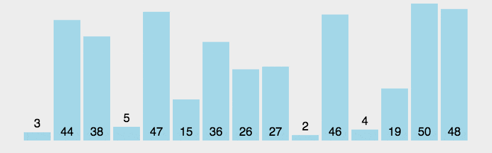

常用的排序算法 参考：https://blog.csdn.net/weixin_42702038/article/details/106744386
问题带入：在实际的软件开发中，为什么我们更倾向于使用插入排序而不是冒泡排序算法？
排序算法分析
最好情况、最坏情况、平均情况时间复杂度
时间复杂度的系数、常数、低阶
比较次数和交换（或移动）次数
排序算法的内存消耗原地排序算法
排序算法的稳定性
冒泡排序 
空间复杂度为 O(1), 是一个原地排序算法
相邻的两个元素相等时，不会交换顺序，是稳定的排序算法
最好时间复杂度为 O(n),最坏时间复杂度为 O(n^2)
python 实现 1 2 3 4 5 6 7 8 9 10 11 12 13 14 15 16 17 18 19 def bubble_sort (li: list ): if not li: return li length = len (li) for i in range (length): exchange = False for j in range (length - i - 1 ): if li[j] > li[j+1 ]: li[j], li[j+1 ] = li[j+1 ], li[j] exchange = True if not exchange: break return li if __name__ == '__main__' : li = [13 , 1 , 5 , 2 , 5 , 2 , 10 ] print (bubble_sort(li))
插入排序 插入排序思想：插入排序是一种最简单直观的排序算法，它的工作原理是通过构建有序序列，对于未排序序列，在已排序的序列中从后向前扫描，找当相应的位置并插入。
1 2 3 4 5 6 7 8 9 10 11 12 13 14 def insert_sort (arr: list ): if not arr: return -1 for i in range (1 , len (arr)): key = arr[i] j = i - 1 while j >= 0 and key < arr[j]: arr[j + 1 ] = arr[j] j -= 1 arr[j + 1 ] = key return arr
选择排序 选择排序类似于插入排序，区分已排序区间和未排序区间。但是选择排序每次都会从未排序区间找到最小的元素，将其放到队首
1 2 3 4 5 6 7 8 9 10 11 12 13 14 def select_sort (arr: list ): if not arr: return -1 for i in range (len (arr)): min_index = i for j in range (i + 1 , len (arr)): if arr[j] < arr[min_index]: min_index = j arr[i], arr[min_index] = arr[min_index], arr[i] return arr
总结